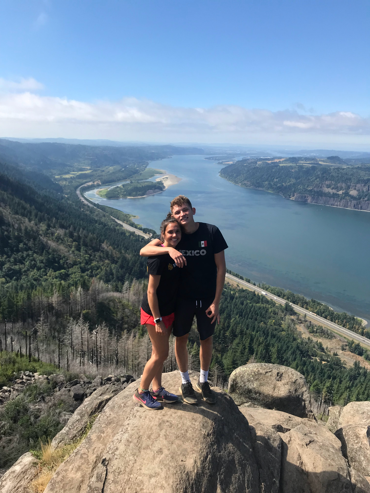

Home Page
Resume
My favorite places in Washington
Columbia River Gorge
Long Beach
Lower Falls



Fun Facts
- Columbia River Gorge
- The Columbia River is the 7th largest river in the U.S.
- One of the world's best wind sports destinations for kiteboarding and windsurfing
- Home to 800 species of plants, including 15 species of wildflowers that exist nowhere else in the world
- Long Beach
- The Long Beach Peninsula is the longest continuous beach in the U.S. at about 28 miles
- The area of the largest salmon run in the world, razor clams, and numerous other fish
- The peninsula is famous for its cranberry bogs, which have some of the largest harvests in the world
- Lower Falls
- A part of Gifford Pinchot National Forest which covers over 1 million acres of WA wilderness
- These falls measures over 200 feet across and drops 43 feet into a cool, clear pool beneath
- The moss-cloaked forest of the Lewis River has giant cedars, nurse logs, and ancient stumps
Watch this video for more places to visit in Washington:
Tableau Graph
Top of Page